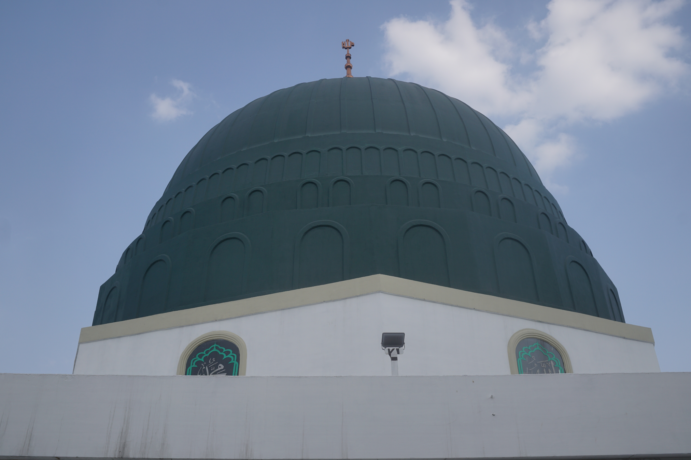
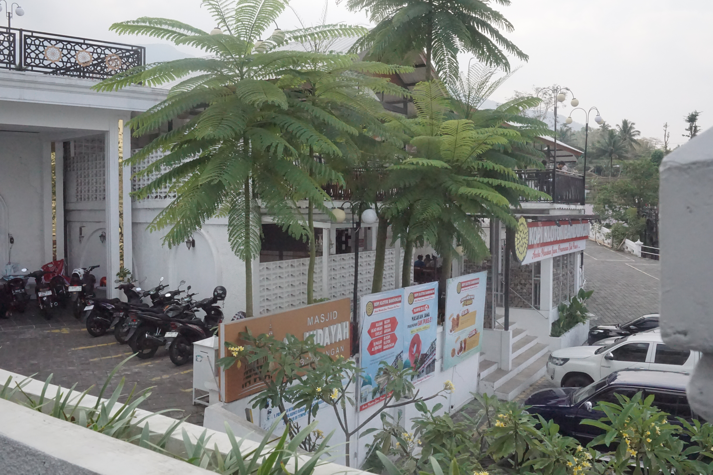
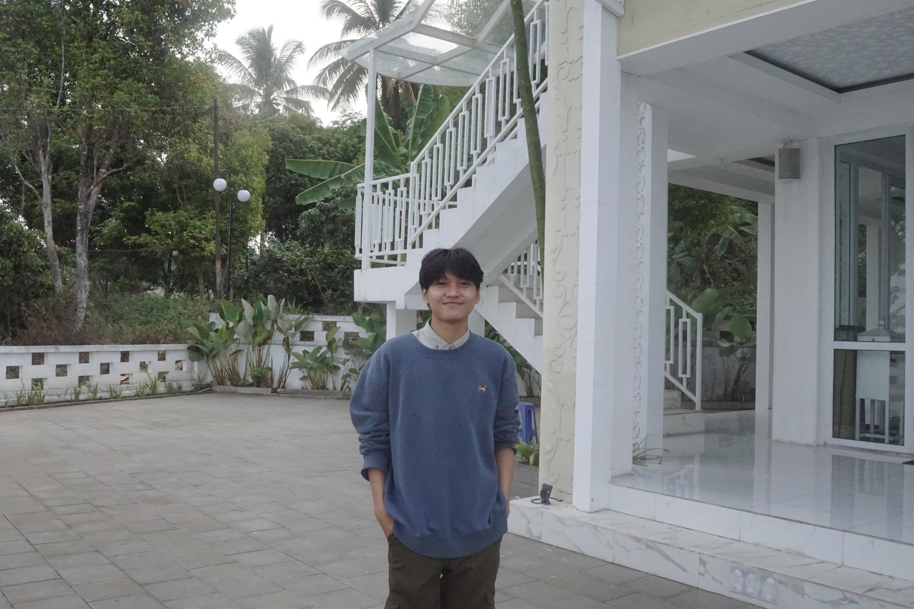
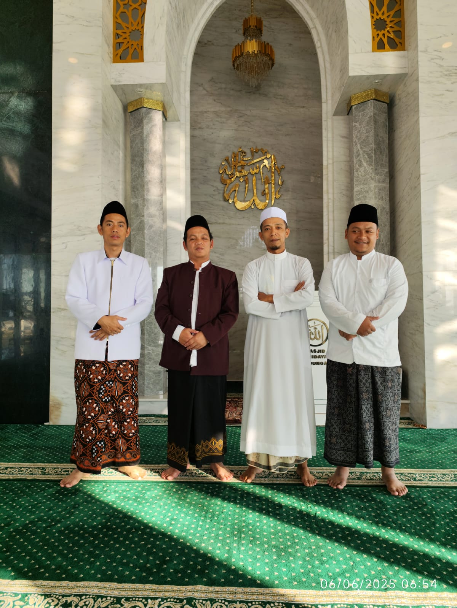
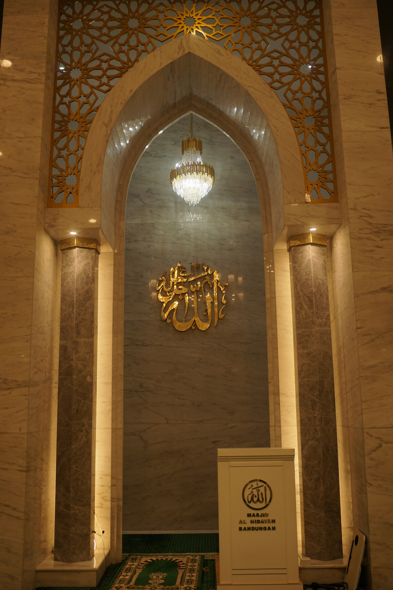

Fasilitas Masjid Bandungan

Bersebelahan dengan Kopi Klotok

Bersebelahan dengan Kopi Klotok

Bersebelahan dengan Kopi Klotok

Latar Belakang
Pada saat itu Idwan (pendiri) itu bermain ke Bandungan, dan melihat tanah kosong yang saat ini masih tegalan dan Idwan memiliki keinginan menambah banyak pahala dan manfaat, pada saat itu beliau berpikir untuk membangun sebuah masjid di area tegalan itu. Setelah itu beliau bertemu dengan mbah Sarjono dan berkonsultasi dengannya untuk membuat masjid safar dan diajak mujadahan.
Kegiatan Rutin Masjid

Bersebelahan dengan Kopi Klotok

Bersebelahan dengan Kopi Klotok

Bersebelahan dengan Kopi Klotok

Bersebelahan dengan Kopi Klotok


Struktur Organisasi
Pendiri
Hj. Idwan Wi Admojo
Yayasan
Pak Hj. Sarjono, Ali Imron, Eko
Ketua Takmir
Faizin
Sekretaris
Miftah Anwar
Bendahara
Abdul Muhid

Jadwal Adzan
- Subuh
- Pak Miftah
- Dzuhur
- Pak Abdul Mufid
- Ashar
- Pak Doni
- Maghrib
- Pak Fajar
- Isya’
- Pak Doni
Jadwal Imam
- Subuh
- Pak Fatkhur Rohman
- Dzuhur
- Pak Fadil Mubarok
- Ashar
- Pak Faizin
- Maghrib
- Pak Faizin
- Isya’
- Pak Fatkhur Rohman
Jadwal Ngaji Subuh
- Minggu-Jumat
- Pak Faizin
- Sabtu
- Pak Imron